Optimizing and Scaling DoMINO
DoMINO is one of the most popular and accurate models in PhysicsNeMo, with top accuracy metrics as measured by physicsnemo-cfd. Originally developed by and for PhysicsNeMo, DoMINO has been overhauled for performance optimizations and scale out enhancements. In this blog post, we'll highlight the performance enhancements we've made to DoMINO - giving more than 30x end to end speed up on DrivAerML training - as well as how you can use them from PhysicsNeMo for your own models.
The DoMINO Model
Inspired by traditional stencil calculations in numerical solvers, DoMINO builds a geometry informed Machine Learning surrogate solver by combining stencil-like query operations with learnable embedding and projection layers. One feature of DoMINO is its ability to simultaneously learn and predict both surface and volumetric data, as shown in Fig. 1.
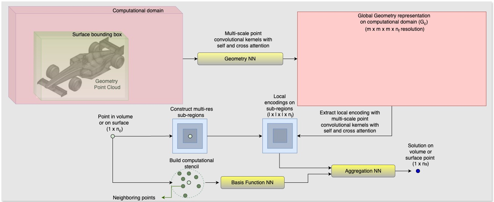
Fig 1: DoMINO model architecture.One key component of DoMINO is the dynamic radius search operation: during both
embedding of input features, and projecting learned states to output features,
DoMINO will project the one unstructured mesh of input points onto a separate
unstructured space of points. For every point in the input set, this
operation selects up to N points from the output set - and these, in turn,
become the stencil-like outputs used for mapping from one space to another.
To perform this operation in native PyTorch requires computing the distance in a brute force way between two point clouds - a prohibitively expensive operation, in both GPU memory and computation speed. In PhysicsNeMo, we leverage the NVIDIA-Warp library and dynamic HashMaps to accelerate this.
In Fig. 2, compare the performance of DoMINO with and without the Warp-accelerated radius search, on a GH200 GPU with synthetic data.
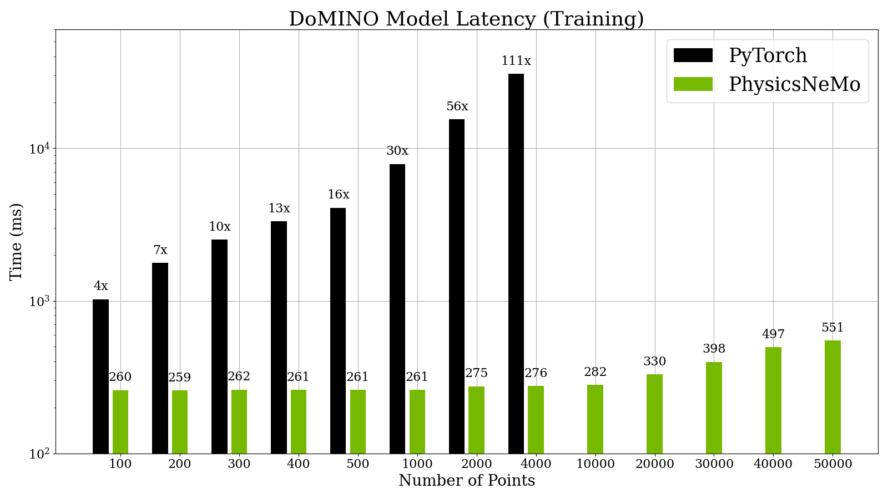
Fig 2: DoMINO Synthetic comparison with and without Warp AccelerationThe PhysicsNeMo implementation of this operation is available for you to use standalone, too! Check out radius_search
Another key feature of DoMINO is its ability to project geometry, surface, and volumetric data all to a learned latent space, and then derive correlations in that latent space. For DoMINO in particular we use a grid based latent space, where grid resolution can be set by the user.
Performance in the 25.03 Release
DoMINO was originally developed for it's accuracy and predictive power - no models are first created with all optimizations in place. To get a picture of where we started from a performance perspective, let's look at a profile of the model for 10 iterations in the 25.03 release, in Fig. 3:
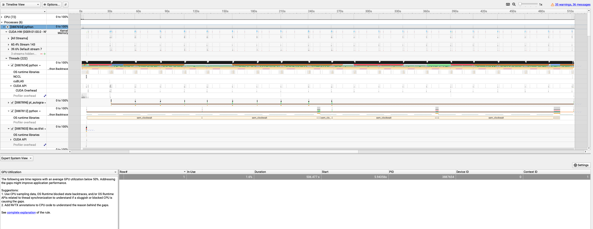
Fig 3: DoMINO Profile in 25.03 ReleaseIf you're experienced with profiling, you'll see problems straight away here. If not, draw your attention to the one line table towards the bottom of the image that shows "GPU Utilization: 1.6%".
Let's zoom in on one iteration's worth of processing, and look at the Python "top-down" view of the stack trace in Fig. 4. The calls are nested in the top down view, and this is zoomed in over just one iteration for about 30 seconds.
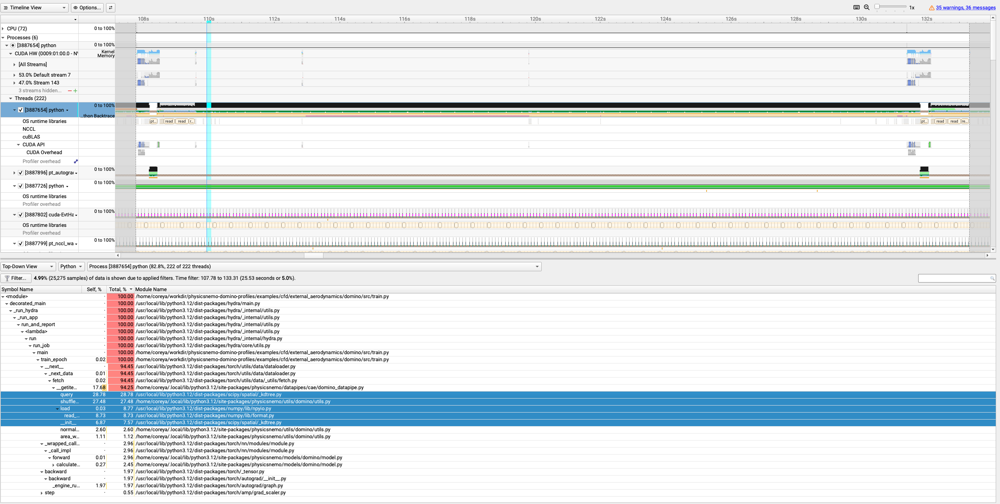
Fig 4: DoMINO Zoomed Profile in 25.03 ReleaseLet's note a few things in this profile:
- The percentages, for each line shown in the bottom, highlight what fraction
of the total time is spent in each python function. So, we see 100% of the time
is spent in
train_epochbut right below it, 94.5% of the time is in__next__. AKA, this model loop is spending almost 95% of it's time in the dataloader! - We can even see, looking at the blue highlighted regions of the table, some
key usage drivers:
- About 29% of the time is in "_kdtree.py"
- About 27% of the time is in "shuffle.py"
- About 9% of the time is in "load"
Just addressing these 3 dataloader items could address up to 65% of the run time. To understand where these hotspots are coming from, in the next section we'll discuss the key features of the dataset and the preprocessing pipeline. Then we'll revisit performance with the 25.06 release results. Let's start by learning about the dataset used in the example.
Note
By the way, this profile was captured with NVIDIA's nsys profiler. Here's the
command:
bash
nsys profile -t cuda,osrt,nvtx,cudnn,cublas --python-sampling true --python-backtrace -s cpu -o profile_report torchrun --nproc-per-node 1 src/train.py
The DrivAerML Dataset
One benchmark dataset that we often use for testing and demonstrating models is the DrivAerML Dataset, which contains 500 automotive meshes, and corresponding CFD simulations, as labeled data for a CFD surrogate solver. The DrivAerML dataset is high spatial fidelity, with approximate data sizes shown in the table below:
| N Mesh Points (approx.) | N Input/Output Features | |
|---|---|---|
| STL Geometry Mesh | 750k | 3 / N/A |
| Surface Simulation Mesh | 8M | 3 / 4 |
| Volume Simulation Mesh | 150M | 3 / 5 |
To download the entire DrivAerML data requires 31TB of disk storage.
Because it's stored in vtk file formats, which are expressive and
comprehensive but somewhat large for ML training, the first step
for building an optimized data pipeline for DoMINO is to convert these files
to a more efficient, binary format.
In the 25.03 release, we were using .npy compressed numpy files. While these
yield good compression, they are strictly sequential reads: we have to read the
entire file, sequentially, to access any part of it.
For more efficient dataloading, we recommend
storing your data in Zarr format. In fact, since
this data curation is such a critical step towards training surrogate solvers,
we have an entire tool dedicated to it:
PhysicsNeMo Curator.
Tip
Zarr is not the only high performance storage solution. Some problems are more easily solved with tools like netCDF, HDF5 (and h5py), or Xarray. Use the right tool for the job!
With the compression and enhancements of Currator, the total filesize of the dataset becomes more managable: instead of 31TB on disk, we need (merely!) 2.1 terabytes to store the processed data with no loss of information.
One key aspect of the data pipeline updates with Zarr instead of numpy is we can do parallel IO: we have to read multiple arrays from disk, and we can read them all in parallel rather than sequentially, to better overlap network latency, decompression/decoding, and CPU->GPU transfers.
We'll discuss more about optimizing the IO pipeline again below; next, let's discuss the unique preprocessing needs of DoMINO.
DoMINO's preprocessing pipeline
The DoMINO data pipeline is complex, at first glance, but by looking at the model inputs and their use we can better understand how the data pipe converts DrivAerML data into tensors that DoMINO can use. The core inputs to the model are summarized in the table below, as well as some computational details about computing them.
| Variable Name | Tensor Shape | Description and Use | Computational Challenges |
|---|---|---|---|
| surf_grid | [1, nx, ny, nz, 3] | Surface-based grid, representing points in the latent space to encode geometry and input points to. | |
| sdf_surf_grid | [1, nx, ny, nz] | Signed Distance Field between surface grid and the geometry mesh. | Requires finding the closest point on the mesh for every input point |
| surface_min_max | [1, 2, 3] | Min and max of surface grid points. | |
| geometry_coordinates | [1, N_geo, 3] | STL mesh points, possibly downsampled to N_geo points. |
|
| global_params_reference | [1, N_f, 1] | Reference value for global parameters like density, stream velocity, N_f total features. | |
| global_params_values | [1, N_f, 1] | Instance (batch) value for global parameters like density, stream velocity, N_f total features. | |
| surface_mesh_centers | [1, N_s, 3] | 3D coordinates of the N_s surface points for which the model should predict output. |
|
| pos_surface_center_of_mass | [1, N_s, 3] | Displacement between surface coordinates and mesh center of mass. | |
| surface_mesh_neighbors | [1, N_s, k, 3] | 3D coord of nearest k neighbors, for each surface point. | Requires finding neighbors on full resolution surface mesh. |
| surface_normals | [1, N_s, 3] | Normal vector on surface | |
| surface_areas | [1, N_s] | Area of each surface point | |
| surface_neighbors_normals | [1, N_s, k, 3] | Normal vector for each neighbor | |
| surface_neighbors_areas | [1, N_s, k] | Area of each surface point | |
| surface_fields | [1, N_s, S_f] | Ground Truth | |
| pos_volume_closest | [1, N_v, 3] | Distance to closest mesh point | |
| pos_volume_center_of_mass | [1, N_v, 3] | volume_coordinates - center of mass | |
| grid | [1, nx, ny, nz, 3] | Volume-based grid of same dimensions as surf_grid |
|
| sdf_grid | [1, nx, ny, nz] | Signed Distance Field from geometry mesh to volume grid. |
Requires finding the closest point on the mesh for every input point |
| sdf_nodes | [1, N_v, 1] | Signed Distance field from volumetric points to geometry mesh. | Requires finding the closest point on the mesh for every input point |
| volume_fields | [1, N_v, V_f] | Ground truth values | |
| volume_mesh_centers | [1, N_v, 3] | 3D volume mesh locations | |
| volume_min_max | [1, 2, 3] | Min and max of volume grid points |
In the table above:
- N_v represents the number of points sampled in the volume
- N_s represents the number of points sampled on the surface
- nx/ny/nz are the spatial dimensions of the embedding grid
- N_geo is the number of points sampled from the geometry mesh
- N_f is the number of "feature" points
- k is the number of surface neighbors
- S_f and V_f represent the surface and volume feature vectors to predict.
Most of the DoMINO Datapipe was CPU based preprocessing with numpy. For small
workloads, that can be just fine - but the meshes in the DrivAerML dataset
are so large that CPU operations like random sampling (shuffle, in the
profile above) are much more expensive than the model training.
To mitigate this, we ported the entire pipeline from numpy to cupy for the
25.06 release. For most operations, this was straightforward. For a couple,
there were some extra steps.
k Nearest Neighbors
The neighbor derived inputs on the surface points require, for every surface
point, calculating the k nearest neighbors from the entire input surface. In
the initial DoMINO Pipeline, the k Nearest neighbors was computed with scipy's
CPU-based implementation - also known as KDTree, and responsible for a third
of the runtime above.
We made two changes to the KDTree for the 25.06 release.
By updating that algorithm to scan more intelligently
over just the sampled N points, instead of finding all neighbors for all points,
we see a decent (2x, approximately) data pipe performance boost.
Even better, when using cupy instead of numpy, we can use NVIDIA RAPIDs
Neighbors tools for a kNN, and significantly accelerate the workload further.
Tip
The kNN utility developed for DoMINO
is also available as a standalone tool that accepts torch.Tensor
inputs and intelligently dispatches to either RAPIDS or Scipy, depending on
the location of the input data (GPU or CPU). See physicsnemo.utils.neighbors
for more information.
Signed Distance Fields
The sdf_ tensors (Signed Distance Field) require finding, for each input point
in a tensor, the closest point on the input geometry mesh,
and computing the distance to it. Computing the distance between two points
is trivial; finding the point of closest approach from any given point to a
mesh is significantly more challenging. A brute-force approach would
be moderately complicated: you have to find not just the closest mesh triangle,
but the point in that triangle that is closest.
To accelerate the the signed distance field computation, we use NVIDIA-Warp's Mesh construction, which builds a bounded volume hierarchy over the input points and queries more efficiently. This enables fast queries for input points to determine the closest mesh point.
Tip
The Signed Distance Field is a popular and
useful tool for creating ML embeddings in CFD data - you can easily use the signed distance function
utilities from physicsnemo in your own models and codes. Check out
physicsnemo.utils.sdf to learn more.
If you have a workload that requires spatial computing - definitely check out Warp. You can even differentiate through kernels!
End to End IO improvements
Finally, by using Zarr for asynchronous data streaming, the total data pipeline on a single GPU reaches 30x speedup over baseline, as seen in Fig. 5.
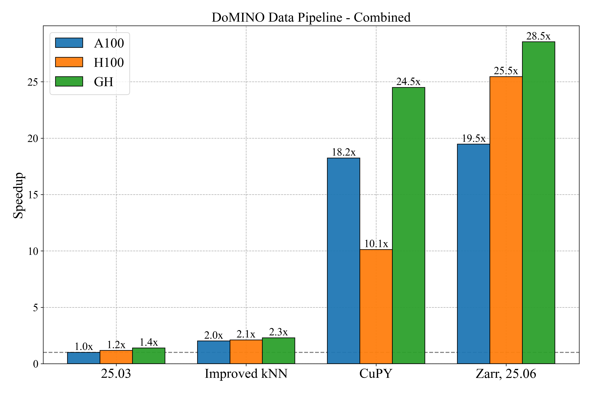
Fig 5: DoMINO datapipe acceleration over baselineWarning
Measuring Datapipe Performance is not just a function of GPU. The IO and file system also have significant impacts - we saw the H100 system lagging behind the A100 system until we switched to Zarr. It doesn't mean the H100 was slower, but rather it was starved for data to process from disk.
Reprofiling
After updating to Zarr, streamlining the kNN operation, and moving the
datapipe to cupy, let's reprofile and check how the bottlenecks have changed.
Figure 6 Shows the profile, over two iterations, of the model in the 25.06 release on a single GPU. Immediately, the most obvious change is the total time and GPU utilization: this time, the GPU utilization is approximately 50%, and the time per iteration has changed from about 30s to about 2.2s - a 10x jump! Not bad, but we can do better still.
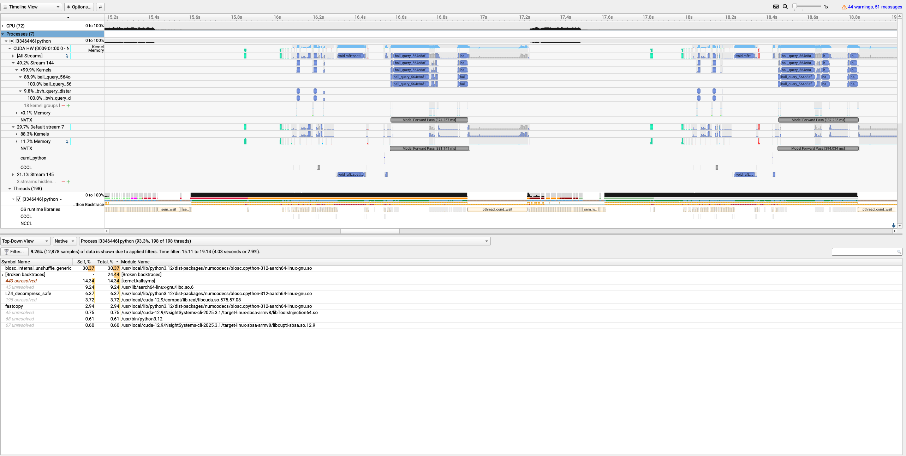
Fig 6: DoMINO in the 25.06 releaseThere are a couple obvious issues here. First, there is a big period of inactivity between each iteration. We see high CPU utilization in the first period, and the "bottom up" view from python shows that 40% of the CPU time is being spent in "BLOSC". That's Zarr's decompression pipeline. There's a great blog post about the decompression pipeline in the XArray blog, which we encourage you to check out to learn more about this.
You can see the challenges with the dataloading pipeline even more clearly with the pytorch profiler:
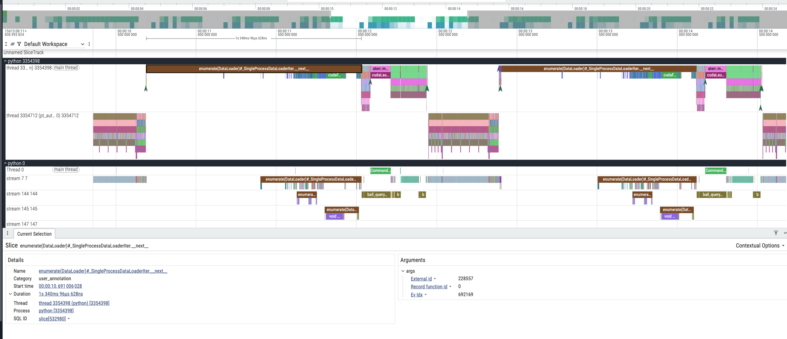
Fig 6: DoMINO in the 25.06 release (PyTorch Profiler)Tip
In the perfetto view of the torch traces, the CPU ops are on top, and the GPU ops are on the bottom. See ui.perfetto.dev for the view, and check out the PhysicsNeMo Performance Guide for info on profiling.
For the DoMINO use case, however, we were fundamentally limited by the sheer size of the data - and we needed as much parallel IO and decompression as possible. To solve this problem, in the DoMINO Dataloader we changed 3 things.
-
First, we switched from using
zarr-pythonto read our files totensorstore. Nothing about the files changed, instead it's just the tool reading the data from disk. Tensorstore has true CPU parallelism for decoding (unlike GIL-bound python), and let us squeeze the most out of our IO tools. -
Second, we refactored the IO and preprocessing to be more isolated, so that we could do efficient IO prefetching. Many models use a technique like this with PyTorch's Dataloader interface; because of the special kernels with Warp and RAPIDS in the preprocessing pipeline, we aren't able to do that as easily here. But with a threaded IO pipeline, we can load the next iteration's data, move it to GPU, and have it ready to go all without disrupting the current iteration's processing.
-
Finally, we made some algorithmic changes to the reading of volumetric data. Since the model randomly samples the input volume clouds, it became a fundamental bottleneck to load the volumetric data: on a single GPU, load latency can be well managed with data prefetching. But when scaling to 8 GPUs on a node, loading ~150e6 x (3 spatial points + 5 ground truth values) x 4 bytes = ~4.5Gb for all 8 gpus can overwhelm disk or network bandwidths and CPU decoding capacity. Unless the network, storage, and decoding can all accommodate more than 30GB/s, there is no way around it: Volumetric IO will be the primary bottleneck.
To mitigate this, we've enabled a new scheme in physicsnemo curator: preshuffling of large datasets. This works by taking large arrays like volumetric data and volumetric ground truths, shuffling them in tandem, and storing the shuffled output to disk.
Then, instead of reading a full example and downsampling to our batch size, we select a smaller, contiguous subset of the data to read, and downsample from that. With approximately 160M mesh points per example, and the number of points per batch closer to 10k or 100k - we can reduce the bandwidth by more than 100x just by reading 1M points instead of 160M points. The performance at as we scale out to a full node of 8xH100 gpus shows this clearly, measuring the time to read 48 images (which is the validation set) in Fig. 7. While the "full" read stalls out at 4 GPUs, the "partial" read continues to show throughput improvements at a full node's worth of GPUs.
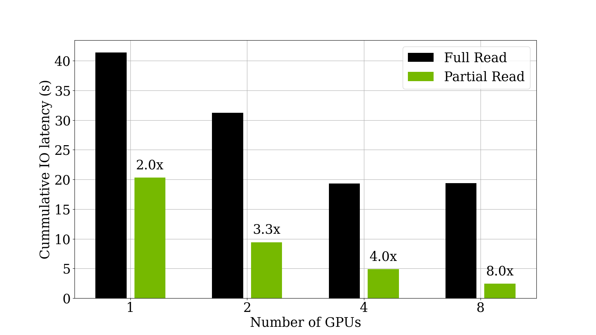
Fig 7: DoMINO IO latency reduction with shuffling and partial readsThis doesn't affect the data sampled to feed into the network: you still have a random subset of the full mesh, but now it's without having to stall your GPU waiting for IO.
End to end performance Gains
Figure 8 shows the PyTorch profile of DoMINO in the 25.11 release. You can see the GPU occupancy is much higher and there is virtually no gap between the end of one backwards pass and the start of the next forward pass - exactly what we want. The IO copies to GPU are completely asynchronous and happen ahead of time, and the total iteration time is under 1 second.
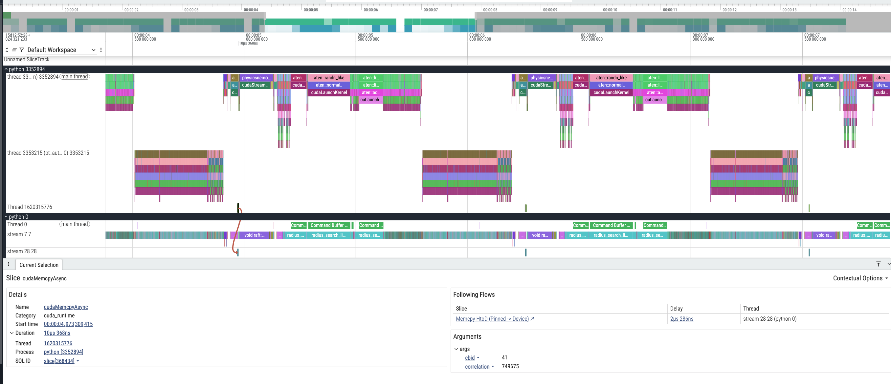
Fig 8: DoMINO in the 25.11 Release (PyTorch)We also moved the entire data processing pipeline to PyTorch, with a few exceptions like the kNN and signed distance field. You can even see that the kNN, once taking 10+ seconds on the CPU, now is the dominant preprocessing operation but almost 100x faster (Figure 9):
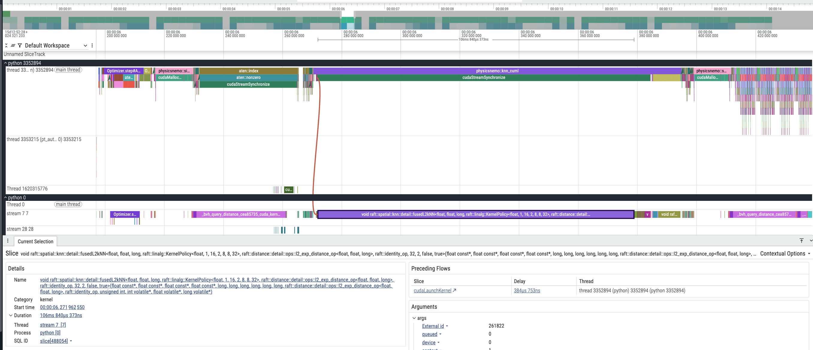
Fig 9: DoMINO Preprocessing in the 25.11 Release (PyTorch)To summarize the performance gains we've brought to DoMINO, let's take a look at release to release gains for the 2025 releases. (Since no performance improvements we made for the 25.08 release, we've omitted it.)
On a single H100, we see for DoMINO the performance in Iterations / second has risen dramatically since 25.03 - 36x for the combined model, as seen in Fig. 10.
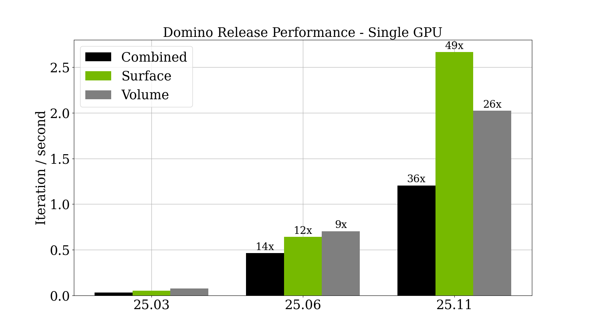
Fig 10: DoMINO Release over Release SpeedupAnd, if you scale up to 8xH100 GPUs, results are similar (Fig. 6).
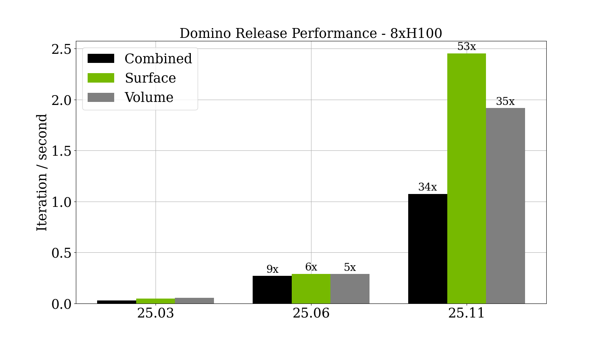
Fig 6: DoMINO Release over Release Speedup on an 8 GPU nodeTo put that in perspective, to train 300 epochs of the DrivAerML dataset in the 25.03 release would have taken about 5.5 days. In the 25.11 release, that would take just over 4 hours instead. These optimizations should enable a significant leap forward in your training, and inference, of the DoMINO model. We hope that this blog has been informative!